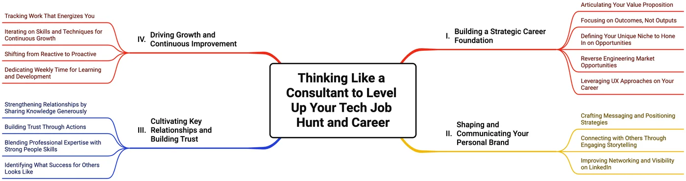

Thinking Like a Consultant to Level Up Your Tech Career
Alongside building open-source tools, I've spent over 25 years in software interaction design and UX consulting – work spanning more than 140 projects – plus several years teaching user interface design at Simon Fraser University. Career-development conversations with former students, colleagues, and fellow consultants kept circling back to the same realization: the mindset that makes a good UX consultant also makes a strong approach to job hunting and career growth in tech.
Treat your career like a consulting engagement
UX consultants spend their time uncovering a client's actual goals and challenges, building trust, and tailoring solutions to specific needs – not pitching a generic service. Career development works the same way: networking and interviewing go better when you can clearly show how your skills and experience align with what an employer actually needs, the same way a consultant tailors their pitch to a client's real problem. And just as consultants refine their methods by analyzing feedback and integrating new approaches, career growth benefits from that same ongoing reflection – iterating on how you network, build trust, and take on new challenges, the same way you'd iterate on a design prototype.

Four areas to focus on
Four consulting-inspired habits cover most of what actually moves a tech career forward:
- Build a strategic foundation. Know your value proposition, focus on outcomes over outputs, and reverse-engineer what employers are actually asking for from job postings and team pages.
- Communicate a personal brand. Position your experience clearly, tell it as a story – challenge, approach, result – and make your LinkedIn profile carry that same narrative, not just a list of titles.
- Cultivate relationships and trust. Share what you know generously, follow up quickly, and be upfront about progress – especially the bad news – the habits that build trust in any collaboration.
- Keep growing, on purpose. Notice what energizes you, treat your skills like prototypes worth iterating on, and protect a standing block of time each week for learning.
A few books worth your time
- Modernize Your Resume – especially good on pairing your resume with your LinkedIn profile.
- What Color is Your Parachute? – resonated with me throughout my own career development.
- Working Out Loud – my own career has benefited from sharing knowledge and experience openly.
- Do Over: Make Today the First Day of Your New Career – relatable, especially shifting from UX consulting into teaching and open-source work.
These strategies come up often in my 1-on-1 conversations with students and early-career developers – feel free to get in touch if you'd like to talk through your own approach, or read more about the teaching and consulting work behind these open-source tools. Having benefited from informational interviews early in my own career, I'm happy to do the same over coffee in Vancouver (#YVR), if useful.